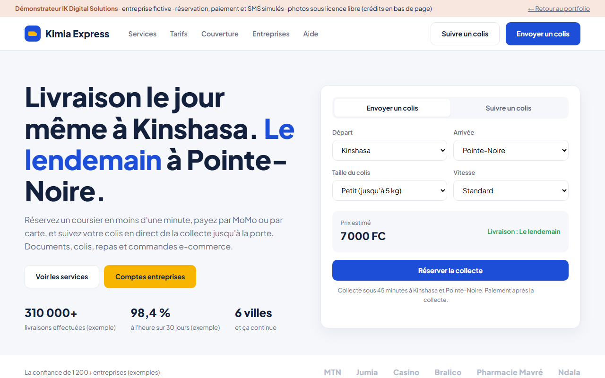
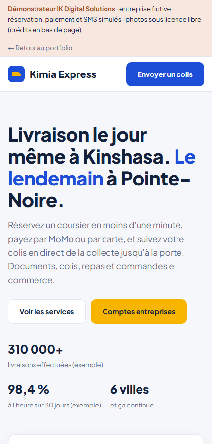

Kimia Express
Réserver. Expédier. Suivre. Sur votre téléphone.


Le scénario de démonstration
Une société de coursiers reçoit ses commandes par appels et messages WhatsApp, donne ses prix de tête, et ses clients rappellent trois fois pour savoir où est leur colis. Les entreprises qui expédient tous les jours veulent un compte, des tarifs dégressifs et une facture mensuelle.
Il fallait un site bilingue qui présente les services, les tarifs, le réseau et les parcours d’envoi et de suivi de colis.
Notre contribution
- 18 pages : neuf en français et neuf en anglais, avec changement de langue vers la page équivalente
- Accueil, envoi de colis, suivi et tarifs ; parcours de démonstration sans paiement réel
- Réseau de 12 villes et 28 agences et points relais fictifs en RDC
- Pages entreprises, coursiers, aide et contact, et à propos
- Identité vert et orange, photographies locales et illustrations adaptées
Les choix d'usage
- Pages statiques adaptées au mobile, photos compressées et navigation en français et en anglais
- Paiement mobile money et espèces au coursier, sans carte bancaire obligatoire
- Parcours de confirmation et de suivi simulés, sans application à installer
- Prix en francs, délais réalistes par ville, adaptable à Lubumbashi ou Goma en changeant une liste
Ce que vous pouvez explorer
Le démonstrateur présente les parcours avec des données fictives. Les paiements, messages et intégrations indiqués comme simulés ne déclenchent aucune opération réelle.
Pour une mise en production
Les éléments suivants décrivent le déploiement et le suivi à prévoir pour un projet client ; ils ne constituent pas des mesures de service du démonstrateur.
- Site statique servi depuis un hébergement local, Cloudflare devant pour le cache et la protection
- Mise en ligne par pipeline automatisé, retour arrière immédiat
- Passerelle mobile money et SMS branchées côté serveur en production
- Sauvegarde chiffrée chaque nuit
- Sonde toutes les 60 secondes sur le site et sur la passerelle de paiement
- Suivi des réservations en échec et des SMS non délivrés
- Alerte WhatsApp et SMS à notre équipe
- Rapport mensuel de disponibilité
Technologies du projet
Et pour votre entreprise ?
Partons de vos besoins pour adapter les parcours, les intégrations et l’accompagnement. Les services associés vous aident à préparer notre premier échange.
Contact
Parlons de votre projet
Décrivez votre besoin. Nous définirons ensemble la prochaine étape.